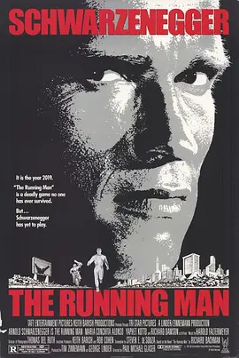

6.8
过关斩将
The Running Man
1987
美国
评分 6.8
导演:
保罗·迈克尔·格拉泽
演员:
阿诺·施瓦辛格 / 玛利亚·康柯塔·阿隆索 / Jim Brown / 杰西·温图拉 / Dweezil Zappa
类型:
动作,惊悚,科幻
剧情简介
2019年的美国被极权统治笼罩，街头布满监控与军队，媒体则通过虚构的英雄与罪犯操控公众情绪。本曾是一名直言不讳的警察，在拒绝执行屠杀平民的命令后被诬陷入狱。铁栏、铁丝网与高压灯光构成了他新的世界，他的名字则被政府媒体加工成残忍的罪人。逃离似乎毫无可能，直到一档收视火爆的电视节目把他推向另一条险路。“过关斩将”是全国最火的真人猎杀节目。参赛者被扔进一个封闭城市般的竞技场，四周是废弃的建筑和陷阱，而真正的威胁来自节目组精心挑选的“猎手”——装备夸张、风格怪异的杀手们。他们在镁光灯与欢呼声中扮演英雄，而被追杀的参赛者则成了供观众兴奋尖叫的牺牲品。本被迫作为选手入场，人群的欢呼像是庆祝他的死亡倒计时。竞技场内，灯光刺眼、管道轰鸣，他在废墟中奔跑、躲避、反击。他的体能与意志让猎手们一次次失败，也让观众首次意识到节目叙事的虚假。随着更多秘密线索浮现，他看清节目背后由政府、财团与媒体串联的巨大操控网络。在混乱中，他与反抗组织汇合，向真相逼近。本的行动逐渐撕开了节目的包装，观众的欢呼声变得动摇，控制舆论的主持人也显露恐慌。最终，本带着怒火与真相重返电视台，用自己的方式终结这场以鲜血换收视的游戏。影片在夸张的动作、极端的媒体讽刺与残酷的未来景观中展现一个被操控的社会，也展示了反抗者如何在绝境中争夺自由。